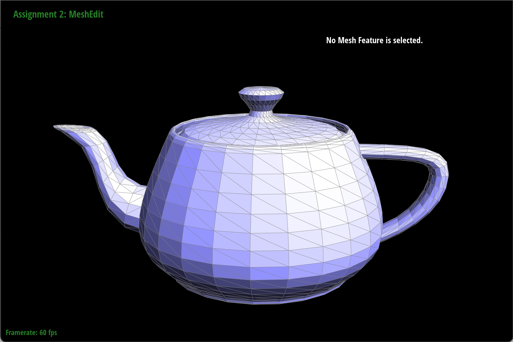
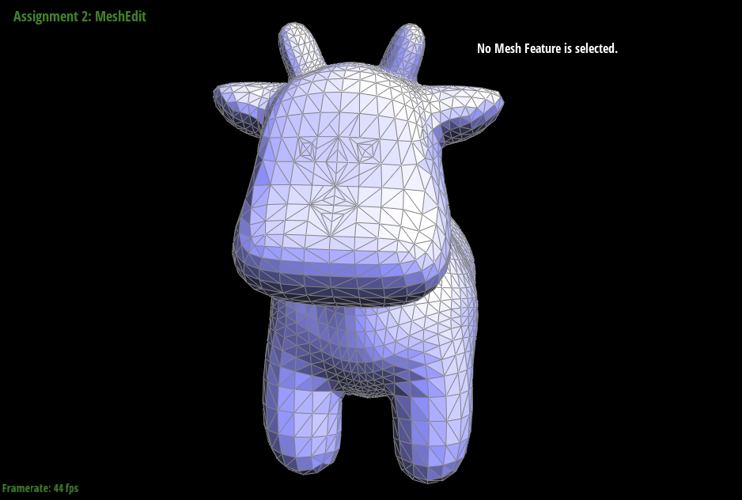

CS 184: Computer Graphics and Imaging, Spring 2022
Project 2: Mesh Editor
Justin Shih & Sumer Kohli
(Give a high-level overview of what you have implemented in this
assignment. Think about what you have built as a whole. Share your thoughts on what interesting things you have
learned from completing this assignment)
- This project had two sections: 1) Bezier
curves and surfaces and 2) Triangle meshes and the
half-edge data structure. In the first section, we implemented bezier curves and surfaces, and in the second
part we implemented a suite of functions that help process and manipulate triangle meshes underlied by the
half-edge data structure. Though these two sections were distinct and separate, they both involved working with
algorithms that fundamentally revolved around processing vertices.
- In working through these two parts of the project, we got the chance to
implement and apply what we had learned in lecture about both bezier curves/surfaces and also triangle meshes.
Particularly in the triangle meshes portion of this project, it was cool to see how a relatively simple set of
steps could lead to huge visual results and gains in the quality/smoothness of the various meshes. In terms of
the work involved with this part, it was a bit different than most CS projects we’ve worked on before
because many of the hardest parts were the planning and bookkeeping we had to do before implementing any
functionality.
Task 1
- Section Summary: For this task we implemented
Bezier curves using 1D de Casteljau Subdivision.
- Approach and Implementation: Since the recursive
evaluation step of this task was similar to that of task 2 (differing only in the use of Vector3Ds or
Vector2Ds), we decided to create a separate helper function std::vector<T>
runSubdivision(std::vector<T> const &points, double t) {...} that utilized generics so that it would
be applicable to both tasks and help us avoid rewriting largely redundant code. As such, instead of implementing
our algorithm directly in BezierCurve::evaluateStep(...), we returned the resulting vector from a call to our
runSubdivision helper function in evaluateStep().
- de Casteljau's algorithm and implementation of Bezier curves:
de Casteljau’s algorithm recursively subdivides successively smaller sets of control
points using linear interpolation between adjacent points until a single point lying on the bezier curve is
calculated and determined. To implement the recursive step of this algorithm, we had a loop iterating over the
given vector of control points and adding the linear interpolations of adjacent control points to a vector of
resulting intermediate control points that got returned for use by the next recursive step. Each time the user
pressed “E,” one more recursive step of the algorithm was executed.
- Figure 1.1: Custom Bezier Curve with 6 Control
Points
- Figure 1.2: Screenshots of each step / level of
the evaluation from the original control points (shown in fig. 1) down to the final evaluated point.
|
1
|
|
2
|
|
3
|
|
4
|
|
5
|
|
6
|
- Figure 1.3: A slightly modified version of
fig. 1 with relocated control points and a different value for the parameter t

Task 2
- Section Summary: For this part, we extended Task
1 to 2-dimensional surfaces in 3D space (aka Bezier surfaces).
- Briefly explain how de Casteljau algorithm extends to Bezier surfaces
and how you implemented it in order to evaluate Bezier surfaces: De Casteljau’s 1D
algorithm (as in Task 1) can be trivially generalized to 3D vectors rather than 2D vectors. Once that subroutine
is implemented, then evaluating each row of control points for a given value of u to form a row of 3D vectors,
and then evaluating the final row at a provided value of v, will yield the Bezier patch at a (u, v). Repeated
application of this process over the [0, 1] x [0, 1] unit square on the u-v plane traces out the corresponding
Bezier surface for a matrix of control points.
- Show a screenshot of bez/teapot.bez (not .dae) evaluated by your
implementation.
- Challenges/Debugging: The primary challenge was
that of abstraction and being able to cleanly generalize (from a programmatic perspective) — C++ templates
especially helped in this regard.
Task 3
- Section Summary: In this section, we implemented
a subroutine to compute a normal vector for a given Vertex whose magnitude is an area-weighted sum of incident
faces.
- Approach and Implementation: Our approach was
straightforward — we traverse through all triangles which include the given vertex, compute the cross
product of the two vectors that define the triangle (the area of the triangle is implicitly encoded in the
magnitude of that cross product), and keep track of the sum of all of these cross products. Since the magnitude
of each cross product vector is directly proportional to the area of its originating triangle, simply unit-izing
the resultant sum vector is sufficient to weight each normal by its area.
- Show screenshots of dae/teapot.dae (not .bez) comparing teapot shading
with and without vertex normals:
|
Without Phong Shading

|
With Phong Shading
|
- Challenges/Debugging: The main challenge was
constructing a loop that would iterate through all incident triangles without issue, and a secondary challenge
was ensuring the orientation of the cross product was correct and consistent.
Task 4:
- Section Summary: For this task, we implemented the edge
flip local mesh edit operation shown below. Figure 4.1:
- Approach and Implementation: Conceptually, implementing
this algorithm was simple, but the implementation involved reassigning many pointers and meticulous bookkeeping.
In order to ensure correctness, we started out by using a labeled diagram that showed the before and after
states of two triangles (like the ones in the figure above) following a flip edge operation (the diagram,
Figure 4.2, we used was found from a post on the course PIazza, which
credits: https://cmu-graphics.github.io/Scotty3D/meshedit/local/edge_flip_diagram.png). To start, we created variables to store the pointers
corresponding to each of the labeled elements in the diagrams below so that they could be easily referenced.
From there, we went through each component, save for h6, h7, h8, and h9, and assigned each of their attributes
to the potentially updated pointer reference as given by the “After Flip” diagram. In this
process, we chose to assign all of the attributes of each element whether or not they actually changed as the
project spec suggested to ensure correctness and thoroughness despite the redundancy this approach
created.
- Figure 4.3: The mesh of a teapot before and
after a few edge flips.
- Challenges/Debugging: Thanks to good bookkeeping
before we started coding, by preceding systematically in reassigning the attributes of each mesh element
involved in a given flip, we didn’t encounter any issues with this task.
Task 5:
- Section Summary: In this task, we implemented another local
mesh edit operation that splits a selected edge as shown below (Figure 5.1).

- Approach and Implementation: Similar to our approach to
flip edge, we started the split edge task by creating a diagram detailing the after state of a mesh when
splitting an edge. One key difference from flip edge though was that split edge required the creation of new
elements. To support this requirement, we color coded our diagram to differentiate between new and existing
elements. Figure 5.2: (the diagram we used)is shown below. After
creating our diagram, we created variables referencing each of the existing elements in the diagram (drawn in
blue) and also initialized all of the new elements (drawn in red and green). Once we had all of these variables
set up, we went through all of the elements and assigned the attributes for each of them to their correct
references based on the diagram.
- Figure 5.3 (Edge splits on the face of a cow
mesh):
|
Before Edge Splits
|
After Edge Splits
|
- Figure 5.4 (Combination of edge splits and edge
flips on the face of a cow mesh):
|
Before Edge Splits and Edge Flips
|
After Edge Splits and Edge Flips

|
- Challenges/Debugging: Like for edge flips, a
thorough diagram and cautious implementation that redundantly assigned references at times helped us avoid
having to debug our implementation.
Task 6
- Section Summary: In this section, we implemented
the repeated loop subdivision algorithm to “upsample” (effectively, smooth) a mesh.
- Approach and Implementation:
- First, we loop through all vertices, mark them as non-new vertices,
compute their new positions, and store it in their instance data. Then, we loop through all edges, mark them as
non-new edges, compute their soon-to-be-added vertex’s position, and store it in their instance data.
- Next, we split each edge in the mesh, marking the newly created
edges as new (but not the edges that comprise halves of the originally-split edge). We set the newly-created
midpoint vertex’s position to be the previously-computed position stored in the edge object.
- Finally, we flip each new edge that connects a new and non-new
vertex, and then set all vertices’ positions to their previously-computed new positions.
- What happens to sharp corners and edges? Can you reduce this effect by
pre-splitting some edges?
- Sharp corners and edges are smoothed out to become far more
“circular” in nature, as evidenced by what happens to the cube (which slowly converges to a sort-of
super-elliptical sphere).
- Pre-splitting edges does appear to preserve some
“sharpness” wherever done (as seen in the following example where I split some top edges of the cube
and then ran the algorithm).
- Load dae/cube.dae. Perform several iterations of loop subdivision on the
cube. Notice that the cube becomes slightly asymmetric after repeated subdivisions. Can you pre-process the cube
with edge flips and splits so that the cube subdivides symmetrically? Document these effects and explain why
they occur. Also explain how your pre-processing helps alleviate the effects.
- The asymmetric result of iterated loop subdivision on the cube
results from the original mesh being asymmetric with respect to the degree of vertices. The extent to which the
position of a vertex changes per iteration of loop subdivision is a function of the degree of the vertex, so
variance in degrees results in asymmetrical variance in final positions.
- We could preprocess the cube by flipping/splitting edges to ensure
that vertices have the same number of neighbors. By splitting each diagonal edge to make an “X” on
each cube face, we make the subdivision far more symmetric — result is as follows.
|
Before Preprocessing
|
After Preprocessing
|
- Challenges/Debugging: This one was a chore to
debug — we originally incorrectly used EdgeIter or VertexIter while mutating the original lists, which
invalidate the original iterators. It also exposed errors and edge cases in our previous edge flip and split
algorithms, and required some backwards-looking debugging as well.
{kind=link}